4. Radiative Fluxes¶
The net radiation at the surface is
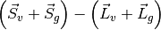,
where  is the net solar flux absorbed by the vegetation
(“v”) and the ground (“g”) and
is the net solar flux absorbed by the vegetation
(“v”) and the ground (“g”) and  is the net longwave flux
(positive toward the atmosphere) (W m-2).
is the net longwave flux
(positive toward the atmosphere) (W m-2).
4.1. Solar Fluxes¶
Figure 4.1 illustrates the direct beam and diffuse fluxes in the canopy.
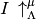 and
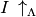 are the upward diffuse fluxes, per
unit incident direct beam and diffuse flux (section 3.1).
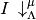 and
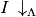 are the downward diffuse fluxes
below the vegetation per unit incident direct beam and diffuse radiation
(section 3.1). The direct beam flux
transmitted through the canopy, per
unit incident flux, is 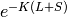 .
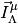 and 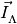
are the fluxes absorbed by the vegetation, per unit incident direct beam
and diffuse radiation (section 3.1).
 and
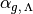 are the direct beam and diffuse ground
albedos (section 3.2).
and
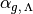 are the direct beam and diffuse ground
albedos (section 3.2).  and
and  are the exposed leaf area
index and stem area index (section 2.1.4).
are the exposed leaf area
index and stem area index (section 2.1.4).
 is the optical
depth of direct beam per unit leaf and stem area (section 3.1).
is the optical
depth of direct beam per unit leaf and stem area (section 3.1).
Figure 4.1 Schematic diagram of (a) direct beam radiation, (b) diffuse solar radiation, and (c) longwave radiation absorbed, transmitted, and reflected by vegetation and ground.
For clarity, terms involving 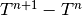 are not shown in (c).
The total solar radiation absorbed by the vegetation and ground is
(1)¶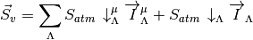
(2)¶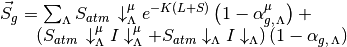
where  and
and
 are the incident direct beam
and diffuse solar fluxes (W m-2). For non-vegetated
surfaces, 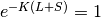,
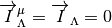,
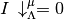, and
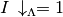, so that
are the incident direct beam
and diffuse solar fluxes (W m-2). For non-vegetated
surfaces, 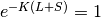,
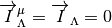,
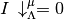, and
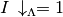, so that
(3)¶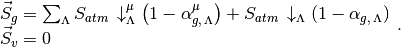
Solar radiation is conserved as
(4)¶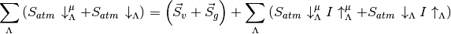
where the latter term in parentheses is reflected solar radiation.
Photosynthesis and transpiration depend non-linearly on solar radiation,
via the light response of stomata. The canopy is treated as two leaves
(sunlit and shaded) and the solar radiation in the visible waveband
( 0.7 µm) absorbed by the vegetation is apportioned to the
sunlit and shaded leaves (section 3.1).
The absorbed photosynthetically
active (visible waveband) radiation averaged over the sunlit canopy (per
unit plant area) is
0.7 µm) absorbed by the vegetation is apportioned to the
sunlit and shaded leaves (section 3.1).
The absorbed photosynthetically
active (visible waveband) radiation averaged over the sunlit canopy (per
unit plant area) is
(5)¶
and the absorbed radiation for the average shaded leaf (per unit plant area) is
(6)¶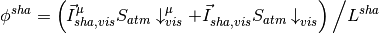
with 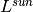 and 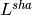 the sunlit and shaded plant area index, respectively. The sunlit plant area index is
(7)¶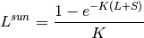
and the shaded leaf area index is 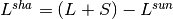 . In calculating ,
(8)¶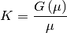
where  and
and  are parameters in the
two-stream approximation (section 3.1).
are parameters in the
two-stream approximation (section 3.1).
The model uses the two-stream approximation to calculate radiative transfer of direct and diffuse radiation through a canopy that is differentiated into leaves that are sunlit and those that are shaded (section 3.1). The two-stream equations are integrated over all plant area (leaf and stem area) in the canopy. The model has an optional (though not supported) multi-layer canopy, as described by Bonan et al. (2012). The multi-layer model is only intended to address the non-linearity of light profiles, photosynthesis, and stomatal conductance in the plant canopy.
In the multi-layer canopy, canopy-integrated radiative fluxes are
calculated from the two-stream approximation. The model additionally
derives the light profile with depth in the canopy by taking the
derivatives of the absorbed radiative fluxes with respect to plant area
index (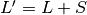) and evaluating them incrementally through the
canopy with cumulative plant area index ( ). The terms
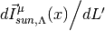
and
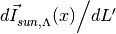
are the direct beam and diffuse solar radiation, respectively, absorbed
by the sunlit fraction of the canopy (per unit plant area) at a depth
defined by the cumulative plant area index ;
and
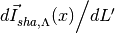
are the corresponding fluxes for the shaded fraction of the canopy at
depth . These fluxes are normalized by the sunlit or shaded
fraction at depth , defined by
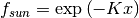, to give fluxes per unit sunlit
or shaded plant area at depth .
). The terms
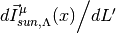
and
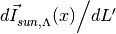
are the direct beam and diffuse solar radiation, respectively, absorbed
by the sunlit fraction of the canopy (per unit plant area) at a depth
defined by the cumulative plant area index ;
and
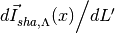
are the corresponding fluxes for the shaded fraction of the canopy at
depth . These fluxes are normalized by the sunlit or shaded
fraction at depth , defined by
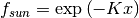, to give fluxes per unit sunlit
or shaded plant area at depth .
4.2. Longwave Fluxes¶
The net longwave radiation (W m-2) (positive toward the atmosphere) at the surface is
(9)¶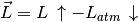
where 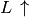 is the upward longwave radiation from the
surface and  is the downward atmospheric
longwave radiation (W m-2). The radiative temperature
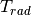 (K) is defined from the upward longwave radiation as
is the downward atmospheric
longwave radiation (W m-2). The radiative temperature
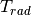 (K) is defined from the upward longwave radiation as
(10)¶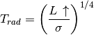
where  is the Stefan-Boltzmann constant (Wm-2 K-4) (Table 2.7). With reference to
Figure 4.1, the upward longwave radiation from the surface to the atmosphere is
is the Stefan-Boltzmann constant (Wm-2 K-4) (Table 2.7). With reference to
Figure 4.1, the upward longwave radiation from the surface to the atmosphere is
(11)¶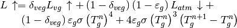
where 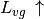 is the upward longwave radiation from
the vegetation/soil system for exposed leaf and stem area
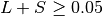, 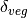 is a step function and is
zero for 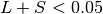 and one otherwise,  is the ground emissivity, and
is the ground emissivity, and  and
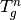 are the snow/soil surface temperatures at the current
and previous time steps, respectively (Soil and Snow Temperatures).
and
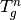 are the snow/soil surface temperatures at the current
and previous time steps, respectively (Soil and Snow Temperatures).
For non-vegetated surfaces, the above equation reduces to
(12)¶
where the first term is the atmospheric longwave radiation reflected by the ground, the second term is the longwave radiation emitted by the ground, and the last term is the increase (decrease) in longwave radiation emitted by the ground due to an increase (decrease) in ground temperature.
For vegetated surfaces, the upward longwave radiation from the surface reduces to
(13)¶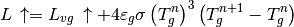
where
(14)¶![\begin{array}{l} {L_{vg} \, \uparrow =\left(1-\varepsilon _{g} \right)\left(1-\varepsilon _{v} \right)\left(1-\varepsilon _{v} \right)L_{atm} \, \downarrow } \\ {\qquad \qquad +\varepsilon _{v} \left[1+\left(1-\varepsilon _{g} \right)\left(1-\varepsilon _{v} \right)\right]\sigma \left(T_{v}^{n} \right)^{3} \left[T_{v}^{n} +4\left(T_{v}^{n+1} -T_{v}^{n} \right)\right]} \\ {\qquad \qquad +\varepsilon _{g} \left(1-\varepsilon _{v} \right)\sigma \left(T_{g}^{n} \right)^{4} } \\ {\qquad =\left(1-\varepsilon _{g} \right)\left(1-\varepsilon _{v} \right)\left(1-\varepsilon _{v} \right)L_{atm} \, \downarrow } \\ {\qquad \qquad +\varepsilon _{v} \sigma \left(T_{v}^{n} \right)^{4} } \\ {\qquad \qquad +\varepsilon _{v} \left(1-\varepsilon _{g} \right)\left(1-\varepsilon _{v} \right)\sigma \left(T_{v}^{n} \right)^{4} } \\ {\qquad \qquad +4\varepsilon _{v} \sigma \left(T_{v}^{n} \right)^{3} \left(T_{v}^{n+1} -T_{v}^{n} \right)} \\ {\qquad \qquad +4\varepsilon _{v} \left(1-\varepsilon _{g} \right)\left(1-\varepsilon _{v} \right)\sigma \left(T_{v}^{n} \right)^{3} \left(T_{v}^{n+1} -T_{v}^{n} \right)} \\ {\qquad \qquad +\varepsilon _{g} \left(1-\varepsilon _{v} \right)\sigma \left(T_{g}^{n} \right)^{4} } \end{array}](../../_images/math/a8192c15bd00a6b02c6c8df35e767cc5f9e06303.png)
where 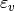 is the vegetation emissivity and 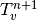 and 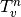 are the vegetation temperatures at the current and previous time steps, respectively (Momentum, Sensible Heat, and Latent Heat Fluxes). The first term in the equation above is the atmospheric longwave radiation that is transmitted through the canopy, reflected by the ground, and transmitted through the canopy to the atmosphere. The second term is the longwave radiation emitted by the canopy directly to the atmosphere. The third term is the longwave radiation emitted downward from the canopy, reflected by the ground, and transmitted through the canopy to the atmosphere. The fourth term is the increase (decrease) in longwave radiation due to an increase (decrease) in canopy temperature that is emitted by the canopy directly to the atmosphere. The fifth term is the increase (decrease) in longwave radiation due to an increase (decrease) in canopy temperature that is emitted downward from the canopy, reflected from the ground, and transmitted through the canopy to the atmosphere. The last term is the longwave radiation emitted by the ground and transmitted through the canopy to the atmosphere.
The upward longwave radiation from the ground is
(15)¶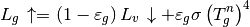
where 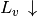 is the downward longwave radiation below the vegetation
(16)¶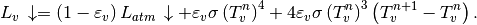
The net longwave radiation flux for the ground is (positive toward the atmosphere)
(17)¶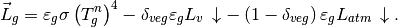
The above expression for  is the net longwave
radiation forcing that is used in the soil temperature calculation
(Soil and Snow Temperatures). Once updated soil
temperatures have been obtained, the term
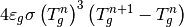
is added to to calculate the ground heat flux
(section 5.4)
is the net longwave
radiation forcing that is used in the soil temperature calculation
(Soil and Snow Temperatures). Once updated soil
temperatures have been obtained, the term
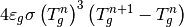
is added to to calculate the ground heat flux
(section 5.4)
The net longwave radiation flux for vegetation is (positive toward the atmosphere)
(18)¶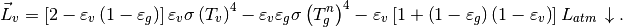
These equations assume that absorptivity equals emissivity. The emissivity of the ground is
(19)¶
where for soil, 0.97 for glacier, and 0.96 for wetland, , and is the fraction of ground covered by snow (section 8.1). The vegetation emissivity is
(20)¶
where and are the leaf and stem area indices
(section 2.1.4) and
is the average inverse optical
depth for longwave radiation.